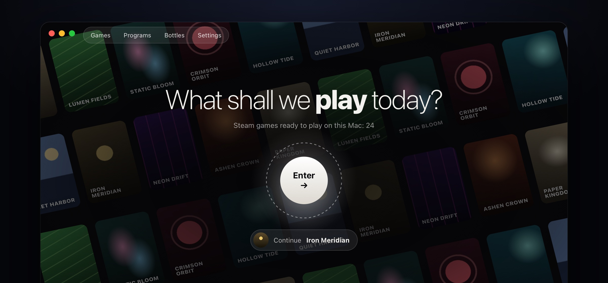
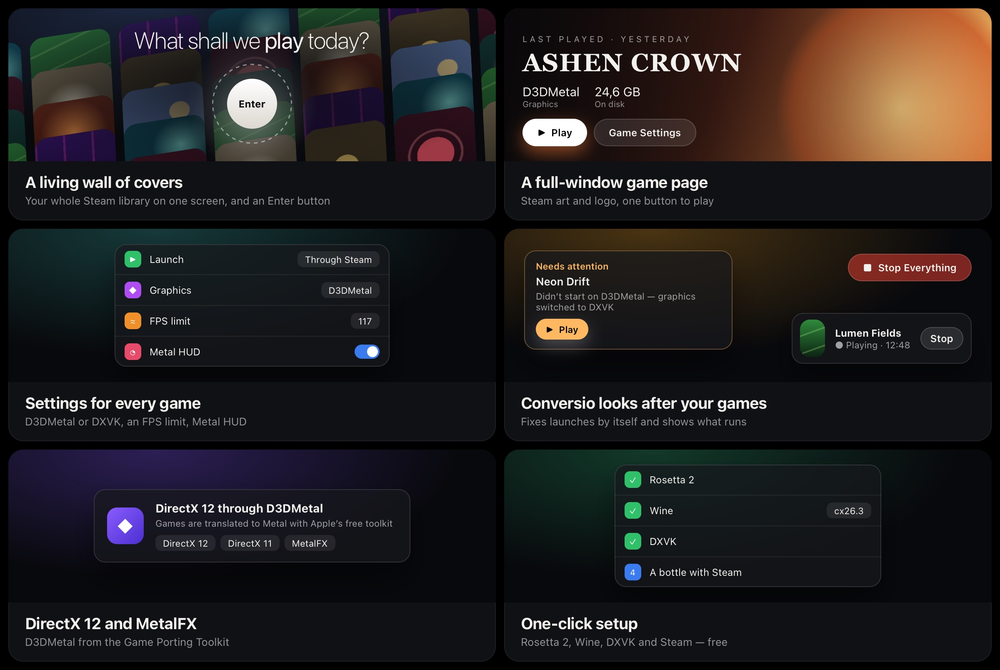

Your whole Steam library, one screen.


Three steps to your first game.
Install everything
One button downloads Rosetta 2, Wine, DXVK and the Windows version of Steam. Nothing to configure.
Sign in to Steam
Your games, saves and friends are where they always were. Install games in Steam as usual.
Press Play
Conversio picks the graphics for each game and switches by itself if a game doesn’t start.
Games that run today.
Questions.
macOS says it can’t verify the developer
Conversio isn’t signed with a paid Apple Developer ID yet. Open System Settings → Privacy & Security and click Open Anyway — only once.
What is D3DMetal and why download it myself?
D3DMetal is Apple’s free DirectX 12 translator from the Game Porting Toolkit. Apple doesn’t allow other apps to ship it, so Conversio opens Apple’s download page and imports the file for you as soon as it’s downloaded.
Is it really free?
Yes. Conversio is open source under GPL-3.0, uses no analytics and sells nothing.
Do online games with anti-cheat work?
Usually not: kernel anti-cheat (BattleEye, EAC in kernel mode) doesn’t run under Wine. Single-player and many co-op games work.